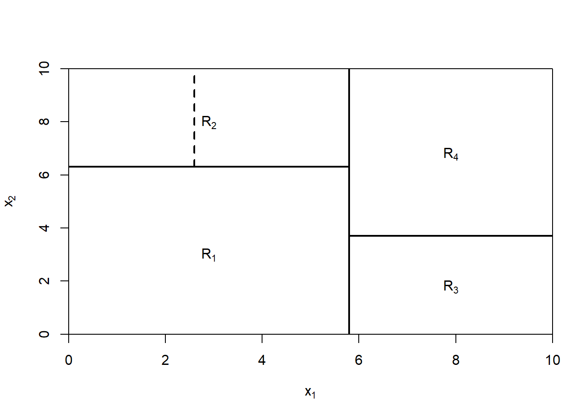
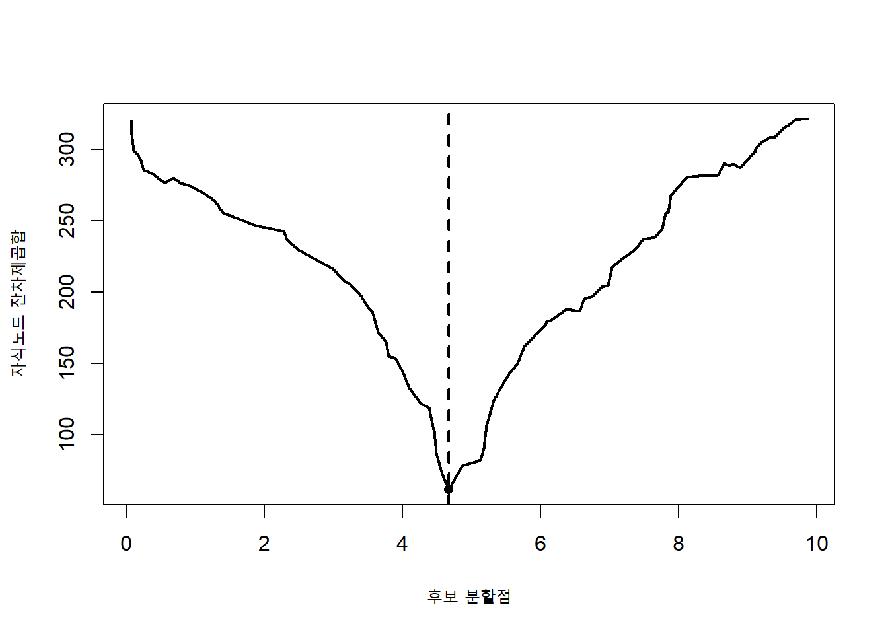
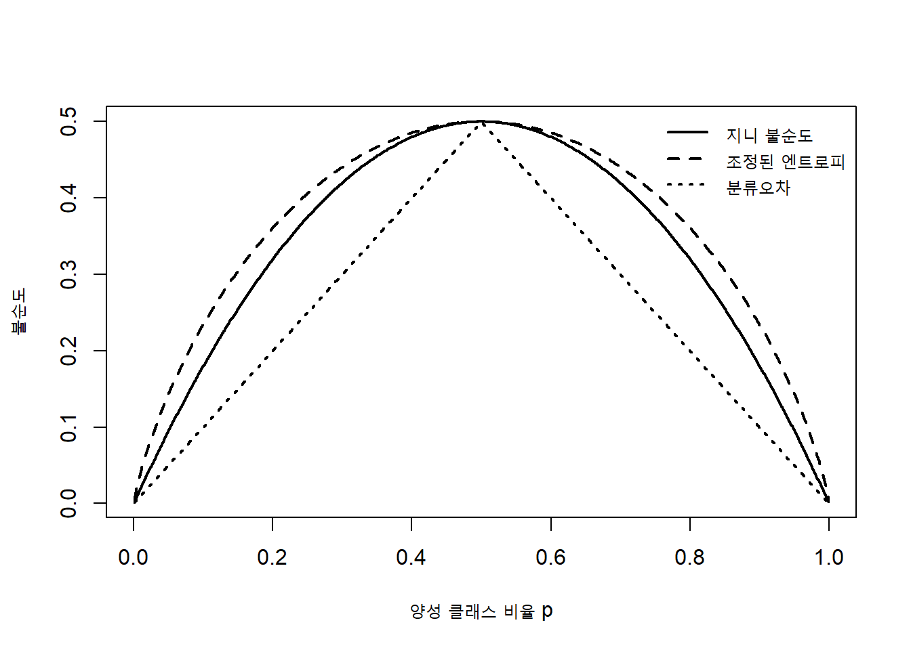
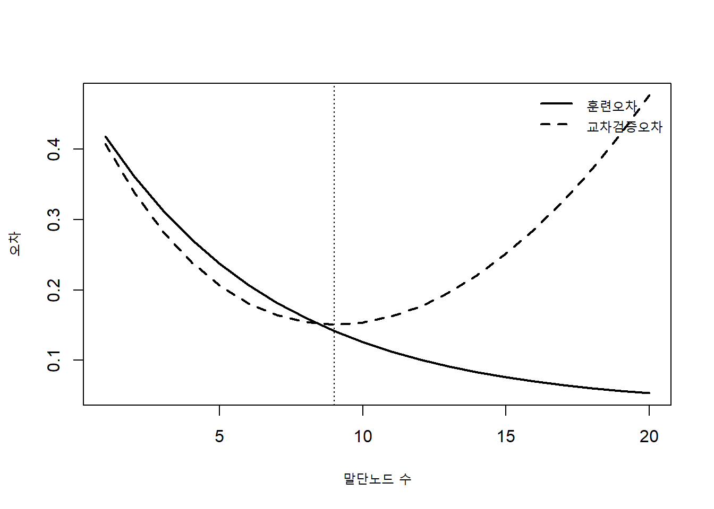
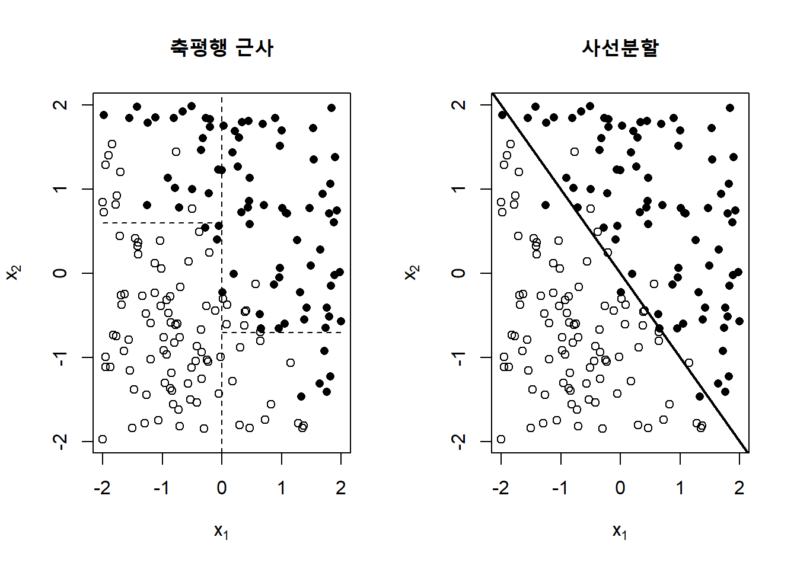

4 의사결정 트리
의사결정 트리(decision tree)는 입력공간을 여러 개의 단순한 영역으로 반복해서 나누고, 각 영역 안에서 하나의 예측값을 부여하는 학습방법이다. 회귀문제에서는 각 영역의 평균이나 다른 요약값을 예측하고, 분류문제에서는 다수 클래스 또는 클래스 확률을 예측한다. 트리의 각 내부노드(internal node)는 하나의 질문을 나타내고, 가지는 그 질문에 대한 답을 나타내며, 말단노드(terminal node)는 최종 예측을 나타낸다.
선형 모형이 전체 입력공간에 하나의 선형 관계를 가정한다면, 의사결정 트리는 입력공간을 국소적인 부분으로 나누어 서로 다른 규칙을 적용한다. 따라서 비선형 관계와 상호작용을 명시적으로 지정하지 않아도 자동으로 표현할 수 있다. 반면 작은 자료 변화에도 분할변수와 분할점(split point)이 달라질 수 있고, 깊은 트리는 훈련자료에 과도하게 적합될 수 있다. 의사결정 트리의 학습은 표현력, 탐욕적 최적화, 복잡도 제어와 안정성 사이의 균형 문제이다.
훈련자료를
\[ \mathcal D = \{(\mathbf x_i,y_i)\}_{i=1}^{n}, \qquad \mathbf x_i\in\mathbb R^p \tag{4.1}\]
라고 하자. 트리 \(T\)가 입력공간을 서로 겹치지 않는 \(M\)개의 말단영역
\[ R_1,\ldots,R_M, \qquad \bigcup_{m=1}^{M}R_m=\mathcal X, \qquad R_m\cap R_\ell=\varnothing\;(m\neq\ell) \tag{4.2}\]
으로 나눈다면 트리 예측함수는
\[ \widehat f_T(\mathbf x) = \sum_{m=1}^{M} \widehat c_m I(\mathbf x\in R_m) \tag{4.3}\]
으로 표현할 수 있다. 회귀에서는 \(\widehat c_m\)이 영역 \(R_m\)의 평균이고, 분류에서는 클래스별 확률벡터 또는 가장 빈도가 높은 클래스가 된다. 즉, 기본적인 의사결정 트리는 입력공간에 대해 구간별 상수함수를 학습한다.
중요의사결정 트리의 핵심 관점
의사결정 트리는 단순한 조건문의 집합이 아니다. 입력공간의 분할, 분할 안의 예측, 분할 복잡도의 제어라는 세 요소가 결합된 통계적 학습모형이다. 트리를 이해할 때는 어떤 질문을 선택하는가뿐 아니라, 그 질문이 손실함수를 얼마나 감소시키며 새로운 자료에서 얼마나 안정적으로 작동하는지를 함께 보아야 한다.
4.1 기본 프로세스
4.1.1 재귀적 분할
의사결정 트리의 가장 대표적인 학습방식은 재귀적 이진 분할(recursive binary splitting)이다. 현재 노드에 포함된 관측값 집합을 \(A\)라고 하자. 변수 \(j\)와 분할점 \(s\)를 선택하면 현재 영역은
\[ A_L(j,s) = \{\mathbf x\in A:x_j\leq s\}, \qquad A_R(j,s) = \{\mathbf x\in A:x_j>s\} \tag{4.4}\]
로 나뉜다. 가능한 모든 후보 \((j,s)\) 중에서 자식노드의 불순도 또는 손실을 가장 많이 감소시키는 분할을 선택한다. 이후 왼쪽과 오른쪽 자식노드에서 같은 과정을 반복한다.
이 과정은 전체 트리를 한 번에 최적화하지 않는다. 현재 노드에서 가장 좋아 보이는 분할을 선택하는 탐욕적 알고리즘이다. 첫 분할에서 선택한 변수와 분할점은 이후 트리 전체의 구조를 제한하므로, 국소적으로 최적인 선택이 전체적으로 최적인 트리를 보장하지는 않는다. 그러나 가능한 모든 트리를 완전탐색하는 것은 조합적으로 매우 어렵기 때문에 재귀적 탐욕분할이 실용적인 표준이 되었다.
트리 성장의 기본 절차는 다음과 같다.
입력: 훈련자료 D, 분할기준, 정지규칙
루트 노드에 모든 훈련관측값을 배치한다.
현재 노드 A에 대해:
가능한 모든 변수와 분할점을 생성한다.
각 후보 분할의 불순도 감소량을 계산한다.
가장 큰 감소량을 만드는 분할을 선택한다.
정지규칙을 만족하면:
현재 노드를 말단노드로 지정한다.
노드 예측값을 계산한다.
그렇지 않으면:
자료를 왼쪽과 오른쪽 자식노드로 나눈다.
각 자식노드에서 같은 절차를 반복한다.
출력: 성장된 의사결정 트리4.1.2 트리의 구성요소
트리는 다음 구성요소로 이루어진다.
- 루트 노드(root node): 모든 훈련관측값이 포함되는 시작노드
- 내부노드: 하나의 분할규칙을 포함하는 노드
- 가지: 분할조건의 결과에 따라 연결되는 경로
- 자식노드: 분할로 새롭게 생성된 노드
- 부모노드: 자식노드를 생성한 상위노드
- 말단노드 또는 잎: 더 이상 분할되지 않고 예측값을 제공하는 노드
- 깊이: 루트에서 특정 노드까지 거친 분할 수
- 부분트리: 특정 노드를 루트로 하는 하위구조
트리의 크기는 말단노드 수, 내부노드 수 또는 최대깊이로 나타낼 수 있다. 이진트리에서 말단노드 수가 \(M\)이면 내부노드 수는 일반적으로 \(M-1\)이다. 그러나 결측값 경로, 다지분할 또는 특수노드를 허용하는 구현에서는 이 관계가 달라질 수 있다.
4.1.3 회귀트리의 예측
제곱손실을 사용하는 회귀트리(regression tree)에서 영역 \(R_m\)의 최적 상수예측은
\[ \widehat c_m = \arg\min_c \sum_{i:\mathbf x_i\in R_m}(y_i-c)^2 = \frac{1}{N_m} \sum_{i:\mathbf x_i\in R_m}y_i \tag{4.5}\]
이다. 여기서 \(N_m\)은 말단영역 \(R_m\)에 포함된 관측값 수이다. 따라서 회귀트리의 훈련 제곱오차는
\[ R(T) = \sum_{m=1}^{M} \sum_{i:\mathbf x_i\in R_m} (y_i-\overline y_m)^2 \tag{4.6}\]
로 나타낼 수 있다.
절대오차 손실
\[ L(y,c)=|y-c| \tag{4.7}\]
을 사용하면 말단노드의 최적 예측값은 평균이 아니라 중앙값이다. 따라서 트리의 노드예측은 손실함수에 의해 결정된다. 평균은 큰 이상치에 민감하지만 중앙값은 더 강건하다.
4.1.4 분류트리의 예측
\(K\)개의 클래스가 있고 말단노드 \(R_m\)에서 클래스 \(k\)의 관측비율을
\[ \widehat p_{mk} = \frac{1}{N_m} \sum_{i:\mathbf x_i\in R_m} I(y_i=k) \tag{4.8}\]
라고 하자. 가장 단순한 분류예측은
\[ \widehat y(\mathbf x) = \arg\max_{k} \widehat p_{mk}, \qquad \mathbf x\in R_m \tag{4.9}\]
이다. 그러나 실제 응용에서는 다수 클래스만 저장하기보다 \(\widehat p_{m1},\ldots,\widehat p_{mK}\)를 함께 저장하는 것이 좋다. 클래스 확률을 보존하면 오류비용과 자원제약에 따라 임계값을 나중에 조절할 수 있다.
트리의 말단확률은 관측빈도에 기반하므로 표본이 적은 잎에서는 0 또는 1에 가까운 극단적 값이 쉽게 생긴다. 라플라스 평활을 적용하면
\[ \widetilde p_{mk} = \frac{N_{mk}+a}{N_m+Ka} \tag{4.10}\]
로 완화할 수 있다. 여기서 \(N_{mk}\)는 노드 \(m\)의 클래스 \(k\) 관측 수이고 \(a>0\)은 평활강도이다.
4.1.5 입력공간의 기하학적 분할
표준 CART형 트리는 한 번에 하나의 변수만 사용하여
\[ x_j\leq s \tag{4.11}\]
형태로 분할한다. 두 개의 연속형 입력변수가 있을 때 각 분할은 좌표축에 평행한 직선이 되고, 반복분할의 결과는 직사각형 영역의 집합이 된다.
그림 4.1에서 첫 번째 분할은 전체 공간을 둘로 나누고, 이후 분할은 이미 생성된 영역 안에서만 작동한다. 따라서 동일한 변수의 동일한 분할점을 다른 가지에서 사용하더라도 의미는 상위조건에 따라 달라진다.
4.1.6 상호작용의 자동 표현
트리의 경로는 조건들의 논리곱으로 해석된다. 예를 들어 다음 경로를 생각하자.
x1 <= 4.2
그리고 x3 > 1.7
그리고 x2 <= 8.5이는 세 변수의 상호작용을 나타낸다. \(x_3\)의 분할효과는 \(x_1\leq4.2\)인 관측값에만 적용되고, \(x_2\)의 효과는 앞선 두 조건을 모두 만족하는 관측값에만 적용된다. 선형 모형에서는 이러한 상호작용을 곱항으로 미리 지정해야 하지만, 트리는 분할경로를 통해 자연스럽게 발견할 수 있다.
그러나 트리가 상호작용을 자동으로 발견한다는 말은 모든 상호작용을 안정적으로 찾는다는 뜻은 아니다. 표본이 작거나 첫 분할이 불안정하면 중요한 상호작용이 다른 가지에 가려질 수 있다. 깊은 상호작용을 발견하려면 더 많은 표본과 적절한 복잡도 제어가 필요하다.
4.1.7 스케일과 단조변환에 대한 성질
축에 평행한 트리는 변수의 순서만 이용해 후보 분할을 구성한다. 엄격하게 증가하는 변환 \(g\)에 대해
\[ x_j\leq s \quad\Longleftrightarrow\quad g(x_j)\leq g(s) \tag{4.12}\]
이므로 로그변환, 단위변환과 같은 단조변환은 가능한 자료분할의 순서를 바꾸지 않는다. 따라서 표준 CART는 거리기반 방법이나 규제 선형모형과 달리 변수 표준화가 필수적이지 않다.
하지만 다음 상황에서는 변수척도가 여전히 중요할 수 있다.
- 다변량 또는 사선분할을 사용하는 경우
- 분할 전 결측대체나 거리계산을 수행하는 경우
- 말단노드에 선형모형을 적합하는 경우
- 여러 모형을 결합하는 파이프라인의 일부인 경우
- 수치정밀도와 매우 큰 값이 계산에 영향을 주는 경우
4.1.8 트리의 해석
작은 트리는 사람의 의사결정 규칙과 비슷하게 읽을 수 있다. 각 관측값은 루트에서 시작해 조건을 따라 내려가며 하나의 말단노드에 도달한다. 특정 예측을 설명하려면 그 관측값이 통과한 경로를 제시할 수 있다.
그러나 트리의 해석가능성을 과장해서는 안 된다. 깊은 트리는 수십 개의 경로를 가지며, 하나의 변수가 여러 위치에 반복해서 나타날 수 있다. 또한 첫 분할이 약간만 달라져도 하위구조 전체가 달라질 수 있다. 따라서 트리 그림 자체뿐 아니라 다음 정보를 함께 확인해야 한다.
- 각 노드의 관측값 수
- 클래스 또는 반응분포
- 불순도 감소량
- 교차검증 성능
- 재표본화에 따른 분할 안정성
- 외부자료에서의 경로 빈도
4.2 분할 선택
4.2.1 노드 불순도(node impurity)와 손실 감소
현재 노드 \(A\)의 불순도를 \(I(A)\)라고 하자. 후보 분할 \((j,s)\)가 왼쪽 자식노드 \(A_L\)과 오른쪽 자식노드 \(A_R\)을 만들면 가중 자식불순도는
\[ I_{\mathrm{child}}(j,s) = \frac{N_L}{N_A}I(A_L) + \frac{N_R}{N_A}I(A_R) \tag{4.13}\]
이다. 분할의 개선량은
\[ \Delta I(j,s) = I(A)-I_{\mathrm{child}}(j,s) \tag{4.14}\]
로 정의한다. 트리는 \(\Delta I(j,s)\)가 가장 큰 후보를 선택한다.
자식노드 크기로 가중하는 이유는 작은 노드 하나만 매우 순수하게 만드는 분할이 과대평가되는 것을 막기 위해서다. 그러나 가중평균만으로 작은 잎의 불안정성이 완전히 해결되는 것은 아니므로 최소 노드크기와 가지치기가 추가로 필요하다.
4.2.2 회귀트리의 분할 기준
제곱오차를 사용하는 회귀트리에서 후보 분할의 목적함수는
\[ Q(j,s) = \sum_{i:\mathbf x_i\in A_L(j,s)} (y_i-\overline y_L)^2 + \sum_{i:\mathbf x_i\in A_R(j,s)} (y_i-\overline y_R)^2 \tag{4.15}\]
이다. 가장 작은 \(Q(j,s)\)를 만드는 변수와 분할점을 선택한다.
부모노드의 제곱오차를
\[ \operatorname{SSE}(A) = \sum_{i:\mathbf x_i\in A}(y_i-\overline y_A)^2 \tag{4.16}\]
라고 하면 분할개선량은
\[ \Delta\operatorname{SSE}(j,s) = \operatorname{SSE}(A) - \operatorname{SSE}(A_L) - \operatorname{SSE}(A_R) \tag{4.17}\]
이다.
전체 제곱합은 노드 내 제곱합과 노드 간 제곱합으로 분해된다. 따라서 회귀트리의 분할은 두 자식노드 평균의 차이가 크고 각 노드 안의 변동이 작은 후보를 선호한다.

그림 4.2에서 잔차제곱합이 가장 작은 위치가 선택된다. 표본변동이 크거나 여러 개의 비슷한 최솟값이 존재하면 선택된 분할점은 재표본화에 따라 크게 달라질 수 있다.
4.2.3 분류오차
노드 \(A\)에서 클래스 비율을 \(p_1,\ldots,p_K\)라고 하자. 다수 클래스로 예측할 때의 분류오차는
\[ I_{\mathrm{error}}(A) = 1-\max_k p_k \tag{4.18}\]
이다. 이 척도는 직접적인 오분류율과 연결되지만, 클래스 비율의 작은 변화에 둔감하다. 예를 들어 이진분류에서 클래스 비율이 \((0.51,0.49)\)에서 \((0.80,0.20)\)으로 바뀌어도 다수 클래스가 같으면 변화량을 충분히 세밀하게 반영하지 못할 수 있다. 따라서 트리 성장에는 지니 불순도나 엔트로피를 더 자주 사용하고, 분류오차는 가지치기나 최종평가에 사용할 수 있다.
4.2.4 지니 불순도
지니 불순도(Gini impurity)는
\[ I_{\mathrm{Gini}}(A) = \sum_{k=1}^{K}p_k(1-p_k) = 1-\sum_{k=1}^{K}p_k^2 \tag{4.19}\]
로 정의한다. 노드에서 임의로 하나의 관측값을 선택하고 노드의 클래스 비율에 따라 무작위로 레이블을 부여할 때 오분류될 확률로 해석할 수 있다.
이진분류에서 양성 클래스 비율을 \(p\)라고 하면
\[ I_{\mathrm{Gini}}(p)=2p(1-p) \tag{4.20}\]
이다. \(p=0\) 또는 \(p=1\)인 순수노드에서 0이고, \(p=0.5\)에서 최대가 된다.
4.2.5 엔트로피와 정보이득
엔트로피 불순도는
\[ I_{\mathrm{Entropy}}(A) = -\sum_{k=1}^{K}p_k\log p_k \tag{4.21}\]
로 정의한다. \(p_k=0\)인 항은 \(0\log0=0\)으로 처리한다. 분할 전후 엔트로피의 감소량을 정보이득(information gain)이라고 한다.
\[ \operatorname{IG}(j,s) = I_{\mathrm{Entropy}}(A) - \frac{N_L}{N_A}I_{\mathrm{Entropy}}(A_L) - \frac{N_R}{N_A}I_{\mathrm{Entropy}}(A_R) \tag{4.22}\]
엔트로피는 로그손실과 연결되며, 지니 불순도보다 극단적인 확률에 조금 더 민감하다. 실제로 지니와 엔트로피는 많은 자료에서 비슷한 분할을 선택하지만 항상 동일하지는 않다.

그림 4.3에서 세 함수는 모두 순수노드에서 0이고 클래스가 균형일 때 가장 크다. 그러나 지니와 엔트로피는 \(p\)의 변화에 더 부드럽게 반응하므로 성장단계에서 세밀한 분할비교가 가능하다.
4.2.6 불순도 함수의 성질
좋은 분류 불순도 함수는 일반적으로 다음 성질을 갖는다.
- 모든 관측값이 한 클래스에 속하면 최소가 된다.
- 클래스 비율이 균등하면 최대가 된다.
- 클래스 레이블의 순서에 영향을 받지 않는다.
- 클래스 혼합이 증가할수록 불순도가 증가한다.
- 자식노드의 가중 불순도가 부모보다 작아질 수 있도록 오목함수를 사용한다.
이진분류에서 \(p\)에 대한 오목한 함수는 서로 다른 클래스 비율을 가진 자식노드로 나눌 때 평균 불순도가 감소하도록 한다. 이것이 트리가 서로 다른 클래스 구성을 가진 영역을 찾는 수학적 근거이다.
4.2.7 비용민감 분할
비용민감 학습(cost-sensitive learning)은 오류의 종류에 따라 서로 다른 손실을 부여한다. 트리에서는 이러한 손실을 분할 기준과 말단노드의 의사결정 규칙에 반영할 수 있다.
오류비용이 비대칭이면 단순한 클래스 비율만으로 분할을 선택하는 것이 부적절할 수 있다. 실제 클래스가 \(k\)인데 \(\ell\)로 예측했을 때의 비용을 \(C_{k\ell}\)이라고 하자. 노드의 클래스별 확률이 \(p_k\)일 때 클래스 \(a\)로 예측하는 기대비용은
\[ \mathcal C(a\mid A) = \sum_{k=1}^{K}C_{ka}p_k \tag{4.23}\]
이고 최적 노드예측은
\[ \widehat a(A) = \arg\min_a\mathcal C(a\mid A) \tag{4.24}\]
이다.
분할기준에도 클래스 가중치 또는 관측값 가중치를 적용할 수 있다. 가중 클래스 비율은
\[ \widetilde p_{mk} = \frac{ \sum_{i:\mathbf x_i\in R_m}w_iI(y_i=k) }{ \sum_{i:\mathbf x_i\in R_m}w_i } \tag{4.25}\]
로 계산한다. 그러나 학습가중치를 변경하면 노드확률이 실제 모집단 확률과 달라질 수 있으므로 독립적인 대표자료에서 확률 보정과 의사결정 성능을 확인해야 한다.
4.2.8 분할변수 선택의 편향
가능한 후보 분할이 많은 변수는 우연히 큰 불순도 감소(impurity decrease)를 만들 기회가 많다. 예를 들어 범주 수가 많은 범주형 변수나 서로 다른 값이 매우 많은 연속형 변수는 후보가 적은 변수보다 선택될 가능성이 높을 수 있다. 이 현상은 변수 중요도에도 영향을 준다.
분할선택 편향(split-selection bias)을 줄이는 방법으로는 다음을 고려할 수 있다.
- 분할변수 선택과 분할점 선택을 분리하는 조건부 추론 방식
- 순열검정을 이용한 변수 선택
- 최소 노드크기와 불순도 감소량 제한
- 교차검증을 통한 복잡도 제어
- 분할기회 수에 덜 민감한 순열 중요도 사용
- 범주형 변수의 불필요한 고유 식별자 제거
경고식별자형 변수의 위험
환자번호, 주문번호, 날짜-시간의 세밀한 코드처럼 거의 모든 관측값에서 값이 다른 변수는 훈련자료를 잘게 나누는 데 매우 유리하다. 이런 변수는 높은 훈련성능을 만들 수 있지만 새로운 자료에 재현되는 구조를 담고 있지 않을 가능성이 크다. 모형 적합 전에 변수의 의미와 예측시점에서의 이용 가능성을 확인해야 한다.
4.2.9 정보이득비와 다지분할
범주형 변수를 여러 자식노드로 한 번에 나누는 다지분할은 범주가 많은 변수에 유리할 수 있다. 정보이득비는 정보이득을 분할 자체의 엔트로피로 나누어 지나치게 많은 가지를 만드는 분할을 제어한다.
자식노드 비율을 \(q_1,\ldots,q_J\)라고 하면 분할정보는
\[ \operatorname{SplitInfo} = -\sum_{j=1}^{J}q_j\log q_j \tag{4.26}\]
이고 정보이득비는
\[ \operatorname{GainRatio} = \frac{\operatorname{InformationGain}} {\operatorname{SplitInfo}} \tag{4.27}\]
이다. 다만 분모가 매우 작을 때 불안정할 수 있고, 이진분할과 다지분할은 트리의 깊이와 해석구조가 달라 직접 비교가 쉽지 않다. CART는 일반적으로 이진분할을 사용한다.
4.2.10 탐욕적 분할의 한계
현재 노드에서 불순도를 가장 크게 줄이는 변수가 전체 예측에 가장 중요한 변수라는 보장은 없다. 다음과 같은 구조에서는 탐욕적 분할이 어려움을 겪을 수 있다.
- 개별 변수는 약하지만 두 변수의 조합이 강한 경우
- XOR와 같이 단일 분할로는 개선이 거의 없는 순수 상호작용
- 여러 후보 분할의 성능이 거의 같은 경우
- 강하게 상관된 변수들이 서로 대체 가능한 경우
- 첫 분할의 작은 차이가 하위트리 전체를 바꾸는 경우
XOR 문제에서 \(Y=I(X_1X_2>0)\)이고 \(X_1,X_2\)가 대칭적으로 분포하면, 루트에서 \(X_1\) 또는 \(X_2\) 하나만 분할해도 클래스 비율이 거의 변하지 않을 수 있다. 충분히 깊은 트리는 이 관계를 표현할 수 있지만, 최소 불순도 감소 같은 조기정지 규칙이 강하면 필요한 첫 분할을 만들지 못할 수 있다.
4.2.11 분할 계산의 효율성
연속형 변수의 값을 정렬한 뒤 인접한 서로 다른 값 사이만 후보 분할점으로 고려하면 된다. \(n_A\)개의 관측값이 있는 노드에서 변수 하나를 처음부터 정렬하면 \(O(n_A\log n_A)\)의 비용이 들지만, 정렬정보와 누적합을 재사용하면 각 후보의 손실을 효율적으로 갱신할 수 있다.
회귀트리에서는 왼쪽과 오른쪽의 관측수, 합, 제곱합을 누적하면 각 후보의 SSE를 상수시간에 계산할 수 있다. 분류트리(classification tree)에서는 클래스별 누적빈도를 이용한다. 대규모 자료에서는 후보 분할점을 분위수나 히스토그램 구간으로 근사하여 계산량을 줄이기도 한다.
4.3 가지치기
4.3.1 트리 성장과 과적합
각 말단노드에 한두 개의 관측값만 남을 때까지 트리를 계속 성장시키면 훈련오차는 매우 작아진다. 회귀에서는 각 관측값을 별도 잎으로 만들면 훈련 제곱오차가 0에 가까워지고, 분류에서는 순수노드를 만들면 훈련오분류가 0이 될 수 있다. 그러나 이러한 트리는 표본의 우연한 잡음까지 규칙으로 학습한다.
트리 깊이가 증가할수록 일반적으로 다음 현상이 나타난다.
- 훈련오차는 단조롭게 감소한다.
- 분할규칙의 수가 증가한다.
- 말단노드 표본 수가 감소한다.
- 예측분산이 증가한다.
- 확률예측이 극단적으로 변한다.
- 작은 자료변화에 대한 구조적 불안정성이 커진다.
따라서 최대트리를 성장시킨 뒤 복잡도를 줄이거나, 성장과정에서 분할을 제한해야 한다.
4.3.2 사전 가지치기
사전 가지치기(pre-pruning) 또는 조기정지는 트리를 성장시키는 과정에서 특정 조건을 만족하면 더 이상 분할하지 않는 방법이다. 대표적인 조건은 다음과 같다.
- 최대깊이
maxdepth - 분할을 시도하기 위한 최소 관측값 수
minsplit - 말단노드의 최소 관측값 수
minbucket - 최소 불순도 감소량
- 최대 말단노드 수
- 분할의 통계적 유의성
사전 가지치기는 계산량을 줄이고 지나치게 작은 노드를 방지한다. 그러나 현재 단계에서 개선이 작더라도 그 분할 아래에서 중요한 상호작용이 발견될 수 있다. 너무 강한 조기정지는 필요한 중간분할을 차단하여 과소적합을 만들 수 있다.
4.3.3 사후 가지치기
사후 가지치기(post-pruning)는 비교적 큰 트리를 먼저 성장시킨 뒤 검증성능이나 복잡도 기준에 따라 불필요한 가지를 제거한다. 큰 트리가 다양한 후보구조를 포함하도록 한 후 전체적인 성능을 기준으로 단순화한다는 장점이 있다.
대표적인 접근은 다음과 같다.
- 검증자료 오차가 감소하지 않는 부분트리 제거
- 감소오차 가지치기
- 비관적 오차추정에 기반한 가지치기
- 비용-복잡도 가지치기
CART에서는 비용-복잡도 가지치기(cost-complexity pruning)가 핵심이다.
4.3.4 비용-복잡도 기준
큰 트리 \(T_0\)의 부분트리 \(T\subseteq T_0\)를 생각하자. 비용-복잡도 기준은
\[ R_\alpha(T) = R(T)+\alpha|\widetilde T| \tag{4.28}\]
로 정의한다. 여기서 \(R(T)\)는 트리의 경험손실, \(|\widetilde T|\)는 말단노드 수, \(\alpha\geq0\)은 복잡도 패널티이다.
- \(\alpha=0\)이면 훈련손실이 가장 작은 큰 트리를 선호한다.
- \(\alpha\)가 커질수록 말단노드가 적은 단순한 트리를 선호한다.
- 같은 손실이면 더 작은 트리가 선택된다.
회귀트리에서는
\[ R(T) = \sum_{m\in\widetilde T} \sum_{i:\mathbf x_i\in R_m} (y_i-\overline y_m)^2 \tag{4.29}\]
를 사용한다. 분류트리에서는 노드 오분류, 지니 기반 위험 또는 관측가중 비용을 사용할 수 있다.
4.3.5 약한 연결 가지치기
내부노드 \(t\)를 루트로 하는 부분트리를 \(T_t\)라고 하자. \(T_t\) 전체를 하나의 말단노드 \(t\)로 바꿀 때 손실증가량을 말단노드 감소량으로 나눈 값을
\[ g(t) = \frac{R(t)-R(T_t)}{|\widetilde T_t|-1} \tag{4.30}\]
라고 하자. \(g(t)\)가 작다는 것은 여러 개의 잎을 유지해 얻는 손실감소가 잎 하나당 작다는 뜻이다. 약한 연결 가지치기(weakest-link pruning)는 가장 작은 \(g(t)\)를 가진 가지를 먼저 제거한다.
이 과정을 반복하면
\[ T_0\supset T_1\supset\cdots\supset T_L \tag{4.31}\]
형태의 중첩된 부분트리열을 얻는다. 각 복잡도 구간에서 최적인 부분트리가 이 열 안에 존재하므로 모든 가능한 부분트리를 따로 비교할 필요가 없다.
4.3.6 교차검증을 이용한 트리 크기 선택
비용-복잡도 계수 \(\alpha\) 또는 부분트리 크기는 교차검증으로 선택할 수 있다. \(K\)개의 폴드에서 각 후보 부분트리의 검증손실을 계산하고 평균을 구한다.
\[ \widehat R_{\mathrm{CV}}(T) = \frac{1}{K} \sum_{k=1}^{K} \widehat R^{(k)}_{\mathrm{valid}}(T) \tag{4.32}\]
가장 작은 평균 검증손실을 가진 트리를 선택할 수 있지만, 복잡한 트리와 단순한 트리의 차이가 검증변동보다 작을 수 있다. 1-표준오차 규칙(one-standard-error rule)은 최소오차 트리의 평균오차에 표준오차 하나를 더한 범위 안에 있는 트리 중 가장 단순한 것을 선택한다.
\[ \widehat R_{\mathrm{CV}}(T) \leq \widehat R_{\min}+\operatorname{SE}_{\min} \tag{4.33}\]

그림 4.4에서 훈련오차는 트리 크기에 따라 계속 감소하지만 교차검증오차는 어느 지점 이후 다시 증가할 수 있다. 가지치기의 목표는 훈련자료를 가장 잘 설명하는 트리가 아니라 새로운 자료의 위험을 가장 작게 만드는 트리를 찾는 것이다.
4.3.7 가지치기와 모형 선택 편향
같은 교차검증 결과를 이용해 트리 크기를 선택하고 그 성능을 최종성능으로 보고하면 선택 편향이 발생한다. 후보가 많을수록 우연히 낮은 검증오차를 가진 트리를 선택할 가능성이 커진다. 최종 일반화성능은 다음 중 하나로 평가해야 한다.
- 완전히 분리된 시험자료
- 외부검증자료
- 바깥 교차검증에서 평가하고 안쪽 교차검증에서 가지치기하는 중첩 교차검증
트리 성장 규칙, 결측처리, 클래스 가중치와 가지치기 계수를 모두 데이터로 선택한다면 이 전체 절차가 안쪽 학습과정에 포함되어야 한다.
4.3.8 트리 안정성과 가지치기
가지치기는 깊은 가지의 잡음을 제거하고 예측분산을 줄일 수 있지만 트리의 구조적 불안정성을 완전히 없애지는 못한다. 루트 근처의 분할이 재표본화에 따라 달라지면 가지치기된 최종 트리도 크게 변할 수 있다.
안정성을 평가하려면 부트스트랩이나 반복 교차검증에서 다음을 기록할 수 있다.
- 루트 분할변수의 선택빈도
- 특정 변수의 전체 선택빈도
- 분할점의 분포
- 관측쌍이 같은 말단노드에 속하는 빈도
- 변수 중요도의 분포
- 예측값의 분산
구조해석이 중요한 경우 하나의 최종 트리만 제시하기보다 이러한 안정성 정보를 함께 제시하는 것이 바람직하다.
4.3.9 가지치기 구현 예시
다음 코드는 rpart를 이용하여 큰 회귀트리를 적합하고 비용-복잡도 표를 확인한 뒤 가지치기하는 기본 구조를 보여준다.
library(rpart)
fit_full <- rpart(
y ~ ., data = train_data,
method = "anova",
control = rpart.control(
cp = 0,
minsplit = 20,
minbucket = 7,
maxdepth = 30,
xval = 10
)
)
printcp(fit_full)
cp_table <- fit_full$cptable
# 최소 교차검증오차를 주는 cp
cp_min <- cp_table[which.min(cp_table[, "xerror"]), "CP"]
fit_min <- prune(fit_full, cp = cp_min)
# 1-표준오차 규칙
row_min <- which.min(cp_table[, "xerror"])
threshold <- cp_table[row_min, "xerror"] + cp_table[row_min, "xstd"]
eligible <- which(cp_table[, "xerror"] <= threshold)
cp_1se <- cp_table[min(eligible), "CP"]
fit_1se <- prune(fit_full, cp = cp_1se)rpart의 복잡도 표는 구현상의 상대오차와 교차검증오차를 제공한다. 소프트웨어의 정의와 행 정렬방식을 확인한 뒤 1-표준오차 규칙을 적용해야 한다. 최종 시험자료는 cp를 선택하는 데 사용하지 않는다.
4.4 연속값과 결측값
4.4.1 연속형 변수의 후보 분할점
현재 노드에서 변수 \(x_j\)의 서로 다른 정렬값을
\[ x_{(1)j}<x_{(2)j}<\cdots<x_{(q)j} \tag{4.34}\]
라고 하자. 동일한 자료분할을 만드는 모든 실수값을 평가할 필요는 없다. 인접한 값 사이의 중간점
\[ s_r = \frac{x_{(r)j}+x_{(r+1)j}}{2}, \qquad r=1,\ldots,q-1 \tag{4.35}\]
만 후보로 고려하면 된다.
분류문제에서는 인접한 두 값의 클래스가 같을 때 일부 후보를 생략하는 최적화가 가능하지만, 표본가중치와 다중 클래스에서는 주의가 필요하다. 최소 말단노드 크기를 적용하면 양쪽에 충분한 관측값을 남기지 못하는 후보를 제외한다.
연속형 변수가 측정오차를 포함하면 선택된 분할점은 임상적 또는 과학적 임계값과 일치하지 않을 수 있다. \(x_j=4.73\)이라는 분할점은 반드시 현실에서 4.73이 특별한 경계라는 뜻이 아니라, 현재 표본에서 손실을 가장 많이 감소시킨 위치일 수 있다.
4.4.2 계단함수 근사와 경계효과
기본 회귀트리는 말단노드 안에서 상수값을 예측하므로 부드러운 함수도 계단형으로 근사한다. 분할점에서 예측값이 갑자기 변하고, 관측범위 밖에서는 가장 바깥 잎의 예측값을 그대로 사용한다.
\[ \widehat f_T(x) = \begin{cases} \widehat c_1,&x\leq s_1,\\ \widehat c_2,&s_1<x\leq s_2,\\ \vdots&\\ \widehat c_M,&x>s_{M-1}. \end{cases} \tag{4.36}\]
따라서 다음 상황에서는 주의해야 한다.
- 실제 관계가 매우 부드럽고 단조로운 경우
- 입력범위 밖의 외삽이 필요한 경우
- 작은 입력변화에 연속적인 예측변화가 요구되는 경우
- 규제된 선형 또는 스플라인 모형이 더 효율적인 경우
트리 앙상블은 여러 계단함수를 평균하여 단일 트리보다 부드러운 예측을 만들 수 있지만, 기본적으로 외삽능력은 제한적이다.
4.4.3 순서형 변수
순서형 범주는 자연스러운 순서를 가지므로 연속형 변수처럼 인접범주 사이를 분할할 수 있다. 예를 들어 질병단계가 I, II, III, IV라면 다음 후보를 고려한다.
{I} 대 {II, III, IV}
{I, II} 대 {III, IV}
{I, II, III} 대 {IV}범주를 임의의 숫자로 코딩하면 간격이 동일하다는 오해가 생길 수 있지만, 트리 분할은 주로 순서만 이용한다. 다만 데이터에 없는 범주순서를 학습과정에서 임의로 재배열해서는 안 된다.
4.4.4 명목형 범주변수
\(K\)개 범주를 가진 명목형 변수의 이진분할은 범주집합 \(S\)를 선택하여
\[ x_j\in S \quad\text{대}\quad x_j\notin S \tag{4.37}\]
로 정의한다. 서로 보완적인 분할은 동일하므로 가능한 비중복 분할 수는
\[ 2^{K-1}-1 \tag{4.38}\]
이다. 범주 수가 크면 완전탐색이 매우 비싸다.
이진분류에서는 각 범주의 양성비율을 정렬한 뒤 인접한 순서 사이만 분할해도 최적 지니 또는 엔트로피 분할을 찾을 수 있는 경우가 있다. 회귀에서는 범주별 반응평균을 정렬할 수 있다. 다중분류에서는 이러한 단순 정렬이 일반적으로 충분하지 않아 근사탐색이 필요할 수 있다.
범주 수가 매우 많은 변수는 다음 문제를 일으킨다.
- 후보 분할 수 증가
- 희귀범주 잎 생성
- 분할선택 편향
- 새로운 범주의 처리 문제
- 변수 중요도 과대평가
희귀범주를 의미 있는 상위범주로 묶거나, 예측시점에 이용 가능한 범주만 유지하고, 새로운 범주에 대한 경로를 미리 정의해야 한다.
4.4.5 결측값 문제의 구분
트리에서 결측값을 다룰 때는 두 상황을 구분해야 한다.
- 훈련자료에 결측값이 있는 경우: 분할변수와 분할점을 어떻게 학습할 것인가?
- 예측시점에 결측값이 있는 경우: 학습된 분할에서 관측값을 어느 가지로 보낼 것인가?
결측값을 단순히 제거하면 완전관측자료가 전체 모집단과 다를 수 있고 표본크기가 감소한다. 특히 결측여부가 결과나 다른 변수와 연관되면 완전사례 분석은 편향될 수 있다.
4.4.6 사전 결측대체
결측값을 평균, 중앙값, 최빈값 또는 예측모형으로 대체한 뒤 트리를 적합할 수 있다. 결측대체 규칙은 반드시 각 훈련 폴드 안에서 추정해야 한다.
연속형 변수의 중앙값 대체는
\[ x_{ij}^{\mathrm{imp}} = \begin{cases} x_{ij},&x_{ij}\text{가 관측됨},\\ \operatorname{median}_{r\in\mathcal T}(x_{rj}),&x_{ij}\text{가 결측}, \end{cases} \tag{4.39}\]
로 나타낼 수 있다. 여기서 \(\mathcal T\)는 현재 훈련자료 인덱스이다.
대체값만 사용하면 결측여부 자체의 정보를 잃을 수 있으므로 결측지시자
\[ M_{ij}=I(x_{ij}\text{가 결측}) \tag{4.40}\]
를 추가할 수 있다. 그러나 결측지시자의 효과는 자료수집 과정에 의존하고, 적용환경에서 결측패턴이 바뀌면 성능이 저하될 수 있다.
4.4.7 결측을 별도 범주로 처리하기
범주형 변수의 결측을 하나의 새로운 범주로 처리할 수 있다. 일부 구현은 연속형 변수에서도 결측값을 특별한 방향으로 보내는 규칙을 학습한다. 이 방법은 결측여부가 예측정보를 포함할 때 유용하지만, 결측을 실제 측정값과 같은 의미의 범주로 간주해서는 안 된다.
결측이 특정 기관, 장비, 시간대 또는 임상결정에 의해 발생한다면 모형이 생물학적 관계보다 운영과정을 학습할 수 있다. 적용환경이 바뀌면 이러한 신호는 쉽게 사라진다.
4.4.8 대리분할
대리분할(surrogate split)은 주 분할변수가 결측일 때 주 분할의 좌우배정을 가장 잘 모방하는 다른 변수를 사용하는 방법이다. 주 분할이
\[ x_j\leq s \tag{4.41}\]
라면 다른 변수 \(x_\ell\)과 분할점 \(u\)를 찾아 주 분할의 좌우배정과 최대한 일치하도록 한다.
대리분할 일치도는 예를 들어
\[ A(\ell,u) = \frac{1}{N_{\mathrm{obs}}} \sum_{i\in\mathcal O} I\left[ I(x_{ij}\leq s) = I(x_{i\ell}\leq u) \right] \tag{4.42}\]
로 계산할 수 있다. 여기서 \(\mathcal O\)는 두 변수 모두 관측된 사례이다.
예측시 주 분할변수가 결측이면 가장 높은 일치도를 가진 대리분할을 적용하고, 그것도 결측이면 다음 대리분할을 사용한다. 사용할 수 있는 대리변수가 없으면 더 많은 훈련관측값이 갔던 방향이나 사전 정의된 기본방향(default direction)으로 보낼 수 있다.
대리분할의 장점은 결측값을 하나의 수치로 대체하지 않고 관측된 변수 간 관계를 이용한다는 점이다. 단점은 계산량이 증가하고, 대리관계가 새로운 환경에서 유지된다는 보장이 없다는 점이다.
4.4.9 확률적 경로와 분수 배정
결측관측값을 왼쪽 또는 오른쪽 한쪽으로 강제하지 않고 훈련자료의 비율에 따라 두 가지로 분수 배정할 수도 있다. 예를 들어 왼쪽 관측비율이 \(q_L\)이면 해당 관측값의 가중치를 \(q_L\)과 \(1-q_L\)로 나누어 두 자식노드에 전달한다.
\[ w_{iL}=q_Lw_i, \qquad w_{iR}=(1-q_L)w_i \tag{4.43}\]
예측확률도 여러 가능한 경로의 가중평균으로 계산할 수 있다. 이 방식은 결측불확실성을 부분적으로 반영하지만 구현과 해석이 복잡해진다.
4.4.10 기본방향 학습
대규모 트리 알고리즘에서는 각 분할에서 결측값을 왼쪽 또는 오른쪽으로 보내는 기본방향을 손실함수 기준으로 학습하기도 한다. 후보 분할을 평가할 때 결측값을 모두 왼쪽으로 보낸 경우와 모두 오른쪽으로 보낸 경우를 비교하여 더 큰 개선을 만드는 방향을 저장한다.
이 방법은 빠르고 단순하지만 결측관측값이 모두 동일한 경로를 따른다. 결측기전이 이질적이면 하나의 기본방향이 충분하지 않을 수 있다.
4.4.11 결측값 처리의 평가
결측처리 방법은 전체 파이프라인 안에서 비교해야 한다. 다음을 확인하는 것이 좋다.
- 전체 성능과 결측집단별 성능
- 결측률 변화에 대한 민감도
- 변수별 결측패턴의 시간적 변화
- 결측대체값과 실제 관측값의 분포
- 결측지시자에 대한 과도한 의존
- 외부기관에서의 재현성
무작위로 결측값을 인위적으로 추가하는 스트레스 검증도 가능하지만, 실제 결측기전과 다르면 낙관적 또는 비현실적인 결과를 만들 수 있다.
4.4.12 예측시점의 변수 이용 가능성
트리의 상위노드에서 사용하는 변수는 거의 모든 예측경로에 필요하다. 해당 변수가 예측시점에 늦게 도착하거나 비용이 높으면 실제 시스템에서 트리를 사용할 수 없을 수 있다. 분할개선량뿐 아니라 다음을 고려해야 한다.
- 측정비용
- 검사소요시간
- 침습성
- 결측가능성
- 법적 또는 윤리적 제한
- 실시간 이용 가능성
측정비용을 포함한 목적함수는 개념적으로
\[ \Delta I(j,s)-\lambda_c C_j \tag{4.44}\]
처럼 표현할 수 있다. 여기서 \(C_j\)는 변수 \(j\)의 측정비용이다. 실제 구현에서는 경로별 누적비용과 이미 측정된 변수인지 여부도 함께 고려해야 한다.
4.5 다변량 의사결정 트리
4.5.1 축평행 분할의 한계
표준 트리의 분할은 하나의 변수만 사용한다. 실제 결정경계가
\[ x_1+x_2>c \tag{4.45}\]
처럼 사선이면 축평행 트리는 여러 개의 직사각형 분할을 계단식으로 조합해야 한다. 이는 트리를 깊게 만들고 작은 잎을 증가시킬 수 있다.
다변량 또는 사선 의사결정 트리는 한 노드에서 여러 변수의 선형결합을 사용한다.
\[ \mathbf w^\top\mathbf x\leq s \quad\text{대}\quad \mathbf w^\top\mathbf x>s \tag{4.46}\]
여기서 \(\mathbf w=(w_1,\ldots,w_p)^\top\)는 분할방향이다. 축평행 분할은 \(\mathbf w\)의 한 원소만 1이고 나머지는 0인 특별한 경우이다.

그림 4.5에서 사선경계는 하나의 다변량 분할로 표현할 수 있지만, 축평행 트리는 여러 분할이 필요하다.
4.5.2 사선분할의 최적화
사선분할(oblique split)은 변수 \(j\)와 임계값 \(s\)만 선택하는 문제가 아니라 \(p\)차원 방향벡터 \(\mathbf w\)와 임계값을 동시에 찾아야 한다.
\[ (\widehat{\mathbf w},\widehat s) = \arg\max_{\mathbf w,s} \Delta I(\mathbf w,s) \tag{4.47}\]
이 목적함수는 자료가 경계를 통과할 때 불연속적으로 변하고 일반적으로 비볼록이다. 가능한 방향은 무한히 많기 때문에 완전탐색이 불가능하다. 대표적인 근사방법은 다음과 같다.
- 좌표별 탐색
- 무작위 방향 탐색
- 선형 판별분석 방향
- 로지스틱 회귀 계수
- 퍼셉트론 또는 SVM 방향
- 투영추적
- 진화 알고리즘
- 미분 가능한 부드러운 분할근사
노드마다 별도의 선형분류기를 적합하면 표현력은 커지지만 계산량과 과적합 위험도 증가한다.
4.5.3 변수 표준화와 사선분할
사선분할에서는 변수의 단위가 \(\mathbf w\)의 추정과 규제에 직접 영향을 준다. 따라서 연속형 변수를
\[ z_j = \frac{x_j-\mu_j}{\sigma_j} \tag{4.48}\]
로 표준화하는 것이 일반적이다. 평균과 표준편차는 현재 학습폴드에서 추정해야 한다.
범주형 변수는 더미변수로 변환할 수 있지만, 범주 수가 많으면 분할방향이 복잡해지고 해석이 어려워진다. 희소규제를 사용하면 일부 변수만 포함하는 사선분할을 만들 수 있다.
4.5.4 희소 사선트리
사선분할의 해석가능성을 높이기 위해 \(\mathbf w\)에 \(\ell_1\) 패널티를 적용할 수 있다.
\[ \min_{\mathbf w,s} \left \{ \mathcal L(\mathbf w,s) + \lambda\|\mathbf w\|_1 \right\} \tag{4.49}\]
\(\lambda\)가 커질수록 많은 계수가 0이 되어 소수 변수만 포함하는 분할을 만든다. 다만 노드별 변수선택의 불안정성과 패널티 선택 편향을 평가해야 한다.
축평행 트리와 희소 사선트리(sparse oblique tree)는 해석가능성의 서로 다른 형태를 제공한다.
- 축평행 트리: 한 질문에 한 변수
- 희소 사선트리: 한 질문에 소수 변수의 점수
의료 점수나 위험등급처럼 여러 측정을 합한 지표가 자연스러운 경우 사선분할이 더 간결할 수 있다.
4.5.5 선형 판별분석을 이용한 노드분할
이진 노드에서 두 클래스의 평균과 공동 공분산을 이용하면 LDA 방향
\[ \mathbf w \propto \boldsymbol\Sigma^{-1} (\boldsymbol\mu_1-\boldsymbol\mu_0) \tag{4.50}\]
을 얻을 수 있다. 관측값을 \(z=\mathbf w^\top\mathbf x\)로 투영한 뒤 \(z\)의 임계값을 탐색한다.
이 방법은 클래스가 선형적으로 분리되는 방향을 빠르게 찾을 수 있지만 공분산 추정이 불안정할 수 있다. 노드 표본 수가 작거나 \(p\)가 크면 축소 공분산, 대각 공분산 또는 릿지 규제가 필요하다.
4.5.6 로지스틱 노드분할
각 노드에서 로지스틱 회귀를 적합하여
\[ \operatorname{logit} P(Y=1\mid\mathbf X) = \beta_0+\mathbf x^\top\boldsymbol\beta \tag{4.51}\]
를 얻고 선형예측자의 임계값으로 분할할 수 있다. 로지스틱 손실과 트리 불순도는 서로 다른 목적이므로 계수 추정 후 최종 임계값을 다시 탐색할 수 있다.
완전분리와 작은 노드 문제를 막기 위해 릿지 또는 Firth형 규제를 고려할 수 있다. 노드마다 복잡한 모형을 적합하면 전체 트리의 유효복잡도가 빠르게 증가하므로 더 강한 가지치기가 필요하다.
4.5.7 모형트리
기본 회귀트리는 말단노드에서 상수값을 예측한다. 모형트리(model tree)는 각 잎에서 선형회귀와 같은 국소모형을 적합한다.
\[ \widehat f(\mathbf x) = \sum_{m=1}^{M} I(\mathbf x\in R_m) \left( \widehat\beta_{m0} + \mathbf x^\top\widehat{\boldsymbol\beta}_m \right) \tag{4.52}\]
모형트리는 계단함수보다 부드러운 국소경향을 표현하고 영역 안에서 제한적인 외삽이 가능하다. 하지만 경계에서 서로 다른 국소모형의 예측이 불연속적으로 바뀔 수 있고, 각 잎에 충분한 표본이 필요하다.
말단모형의 복잡도까지 고려하면 전체 목적함수는
\[ R(T) + \alpha|\widetilde T| + \lambda \sum_{m=1}^{M} \Omega(\boldsymbol\beta_m) \tag{4.53}\]
처럼 표현할 수 있다. 트리 크기와 잎 모형의 복잡도를 동시에 선택해야 한다.
4.5.8 다중출력 회귀트리
반응변수가 벡터
\[ \mathbf y_i = (y_{i1},\ldots,y_{iq})^\top \tag{4.54}\]
인 경우 하나의 트리로 여러 결과를 동시에 예측할 수 있다. 노드의 평균벡터를 \(\overline{\mathbf y}_A\)라고 하면 분할손실을
\[ R(A) = \sum_{i:\mathbf x_i\in A} \|\mathbf y_i-\overline{\mathbf y}_A\|_2^2 \tag{4.55}\]
로 정의할 수 있다. 결과마다 단위와 분산이 다르면 표준화 또는 가중치가 필요하다.
\[ R_w(A) = \sum_{r=1}^{q}w_r \sum_{i:\mathbf x_i\in A} (y_{ir}-\overline y_{Ar})^2 \tag{4.56}\]
다중출력 트리(multi-output tree)는 여러 결과가 공유하는 예측구조를 발견할 수 있지만, 한 결과에 좋은 분할이 다른 결과에는 좋지 않을 수 있다. 결과별 중요도와 측정신뢰도를 반영하여 가중치를 정해야 한다.
4.5.9 다중레이블 분류트리
하나의 관측값이 여러 레이블을 동시에 가질 수 있는 다중레이블 문제에서는 각 레이블을 독립적인 이진결과로 취급하거나 레이블 벡터 전체의 불순도를 정의할 수 있다. 독립 접근의 노드손실은
\[ I(A) = \sum_{r=1}^{q} \omega_r I_r(A) \tag{4.57}\]
로 나타낼 수 있다. 그러나 레이블 간 의존성을 무시하면 중요한 동시발생 구조를 놓칠 수 있다. 레이블 조합을 하나의 클래스처럼 처리하면 클래스 수가 폭발한다. 실제 문제에서는 레이블 의존모형이나 앙상블과 함께 사용하는 경우가 많다.
4.5.10 다변량 트리의 장단점
| 구분 | 축평행 트리 | 사선 트리 | 모형트리 |
|---|---|---|---|
| 노드 분할 | 단일 변수 임계값 | 변수 선형결합 | 단일 또는 다변량 분할 |
| 말단 예측 | 상수 또는 클래스 확률 | 상수 또는 클래스 확률 | 국소 선형모형 등 |
| 표현력 | 계단형, 상호작용에 강함 | 사선경계를 간결하게 표현 | 영역별 추세 표현 |
| 전처리 | 표준화 불필요한 경우가 많음 | 표준화가 중요 | 말단모형에 따라 필요 |
| 해석 | 질문이 단순함 | 분할점수가 복잡할 수 있음 | 잎별 계수까지 해석 필요 |
| 계산량 | 비교적 작음 | 큼 | 큼 |
| 과적합 위험 | 깊이에 따라 증가 | 방향추정으로 더 증가 | 잎 모형으로 더 증가 |
표현력이 높은 트리가 항상 더 좋은 것은 아니다. 사선트리와 모형트리는 작은 트리로 복잡한 경계를 표현할 수 있지만 각 노드에서 더 많은 모수를 추정한다. 표본크기, 설명가능성, 계산량과 적용목적을 함께 고려해야 한다.
4.6 트리의 평가와 해석
4.6.1 예측성능 평가
트리도 Chapter 2에서 설명한 동일한 평가원칙을 따른다. 회귀에서는 MAE, RMSE와 예측오차 분포를 평가하고, 분류에서는 구별도, 클래스별 오류, 확률보정과 의사결정효용을 확인한다.
트리의 하이퍼파라미터에는 다음이 포함된다.
- 최대깊이
- 최소 분할크기
- 최소 잎크기
- 최소 불순도 감소량
- 비용-복잡도 계수
- 불순도 함수
- 클래스 가중치
- 범주형 변수 처리방식
- 결측값 처리방식
- 사선분할의 규제강도
이들 중 데이터로 선택하는 항목은 모두 내부 검증에 포함해야 한다.
4.6.2 잎 크기와 확률의 불확실성
말단노드에서 사건 수가 \(m\)이고 총 관측 수가 \(N_m\)이면 단순 사건확률은
\[ \widehat p_m=\frac{m}{N_m} \tag{4.58}\]
이다. 이항근사 표준오차는
\[ \operatorname{SE}(\widehat p_m) \approx \sqrt{ \frac{\widehat p_m(1-\widehat p_m)}{N_m} } \tag{4.59}\]
이다. \(N_m\)이 작으면 잎이 순수해 보여도 불확실성이 매우 크다. 클래스 확률이 중요한 응용에서는 최소 잎크기, 베이지안 평활, 앙상블과 외부 보정이 필요할 수 있다.
4.6.3 변수 중요도
이 절에서는 트리에서 직접 계산되는 중요도에 초점을 둔다. 모형 독립적 중요도와 조건부 중요도는 ?sec-ch17-variable-importance에서 비교한다.
불순도 기반 변수 중요도는 변수 \(j\)가 사용된 모든 노드의 불순도 감소량을 합하여 계산한다.
\[ \operatorname{VI}_j = \sum_{t:\,v(t)=j} \frac{N_t}{n} \Delta I_t \tag{4.60}\]
여기서 \(v(t)\)는 노드 \(t\)의 분할변수이다. 상위노드와 큰 노드에서의 개선은 더 크게 반영된다.
그러나 불순도 중요도는 다음 편향을 가질 수 있다.
- 후보 분할이 많은 변수 선호
- 연속형 변수와 고범주 변수 선호
- 상관변수 사이의 중요도 분산 또는 독점
- 훈련자료에 대한 과적합 반영
순열 중요도(permutation importance)는 평가자료에서 변수 \(j\)의 값을 무작위로 섞은 뒤 성능감소를 계산한다.
\[ \operatorname{PI}_j = \widehat R_{ \mathrm{perm}(j)} - \widehat R_{\mathrm{original}} \tag{4.61}\]
상관된 변수에서는 한 변수만 섞어도 다른 변수가 정보를 대체하므로 중요도가 작게 보일 수 있다. 조건부 순열이나 변수군 단위 순열을 고려할 수 있다.
4.6.4 경로 기반 설명
개별 예측은 루트에서 잎까지의 경로로 설명할 수 있다. 회귀트리에서는 부모노드 평균에서 자식노드 평균으로 이동할 때의 변화량을 더하여 예측을 분해할 수 있다.
\[ \widehat f(\mathbf x) = \widehat c_{\mathrm{root}} + \sum_{t\in\operatorname{path}(\mathbf x)} \left( \widehat c_{\mathrm{child}(t)} - \widehat c_t \right) \tag{4.62}\]
각 변화량을 해당 분할변수의 기여로 표시할 수 있지만, 변수 순서와 상관구조에 따라 기여가 달라진다. 경로기여는 인과효과가 아니라 특정 트리 구조 안의 예측분해이다.
4.6.5 부분의존과 개별조건부기대
부분의존(partial dependence)도와 ICE의 일반적 정의, 상관된 특성에서의 한계는 ?sec-ch17-pdp-ice에서 확장한다.
트리가 복잡하면 전체 경로를 읽기 어렵다. 변수 \(x_j\)의 부분의존함수는 다른 변수의 경험분포에 대해 평균낸 예측으로 정의한다.
\[ \widehat f_j(z) = \frac{1}{n} \sum_{i=1}^{n} \widehat f(z,\mathbf x_{i,-j}) \tag{4.63}\]
개별조건부기대 곡선은 각 관측값에 대해
\[ \widehat f_{ij}(z) = \widehat f(z,\mathbf x_{i,-j}) \tag{4.64}\]
를 그린다. 변수 간 강한 상관이 있으면 실제로 거의 존재하지 않는 조합에서 예측하게 될 수 있다. 부분의존은 모형의 예측구조를 요약하지만 자료생성 과정이나 인과효과를 직접 나타내지 않는다.
4.6.6 트리 규칙의 검증
트리에서 발견된 규칙을 과학적 결론으로 해석하려면 별도의 검증이 필요하다. 동일한 자료에서 분할점을 탐색하고 그 하위집단의 평균차이를 다시 검정하면 선택과정이 무시되어 유의성이 과대평가된다.
규칙을 검증하는 방법은 다음과 같다.
- 독립자료에서 동일한 규칙 적용
- 표본분할을 통한 발견자료와 확인자료 분리
- 재표본화에서 경로 선택빈도 평가
- 사전 정의된 임계값과 비교
- 선택적 추론 또는 다중탐색 보정
트리의 분할점은 탐색적으로 생성된 후보라는 점을 명시해야 한다.
4.7 의사결정 트리의 통합적 이해
4.7.1 경험위험 최소화 관점
의사결정 트리도 규제된 경험위험 최소화의 틀로 표현할 수 있다.
\[ \widehat T = \arg\min_{T\in\mathcal T} \left[ \frac{1}{n} \sum_{i=1}^{n} L\{y_i,f_T(\mathbf x_i)\} + \alpha\Omega(T) \right] \tag{4.65}\]
여기서 \(\Omega(T)\)는 말단노드 수, 깊이, 경로길이, 분할변수 수 또는 잎 모형의 복잡도를 나타낼 수 있다. 표준 재귀분할은 이 목적함수의 전역최적해를 직접 찾지 않고, 큰 트리를 탐욕적으로 생성한 후 부분트리열에서 복잡도를 선택한다.
이 관점에서 각 요소는 다음과 같이 대응된다.
| 학습요소 | 의사결정 트리에서의 형태 |
|---|---|
| 가설 공간 | 가능한 트리구조와 말단예측의 집합 |
| 손실함수 | 제곱손실, 절대손실, 로그손실, 분류비용 |
| 최적화 | 재귀적 탐욕분할과 가지치기 |
| 규제 | 깊이, 잎 수, 최소 노드크기, 비용-복잡도 패널티 |
| 일반화 평가 | 교차검증, 시험자료, 외부검증 |
4.7.2 편향과 분산
얕은 트리는 입력공간을 거칠게 나누므로 높은 편향과 낮은 분산을 가질 수 있다. 깊은 트리는 복잡한 구조를 표현하지만 표본변동에 민감하여 낮은 편향과 높은 분산을 갖기 쉽다.
트리의 높은 분산은 두 수준에서 나타난다.
- 구조분산: 분할변수와 분할점 자체가 달라짐
- 예측분산: 같은 입력에 대한 최종예측이 달라짐
가지치기는 두 분산을 줄이지만 단일 트리의 불안정성을 완전히 제거하지 못한다. Chapter 8에서 다룰 배깅과 랜덤 포레스트는 여러 트리의 예측을 평균하여 분산을 크게 줄인다.
4.7.3 트리와 선형 모형의 비교
| 특성 | 선형 모형 | 의사결정 트리 |
|---|---|---|
| 기본 함수형태 | 전역 선형 또는 기저함수 선형 | 구간별 상수 |
| 비선형성 | 사전 변환 필요 | 반복분할로 자동 표현 |
| 상호작용 | 명시적 지정 | 경로로 자동 표현 |
| 외삽 | 선형구조에 따라 가능 | 일반적으로 제한적 |
| 변수척도 | 규제 시 표준화 중요 | 축평행 트리는 덜 민감 |
| 결측처리 | 사전 처리 필요 | 대리분할 등 내장 가능 |
| 안정성 | 규제 시 비교적 높음 | 단일 트리는 낮을 수 있음 |
| 해석 | 계수 중심 | 규칙과 경로 중심 |
실제 관계가 대체로 가법적이고 부드러우면 선형모형이나 스플라인이 더 효율적일 수 있다. 임계값, 복잡한 상호작용과 이질적 하위집단이 중요하면 트리가 유리할 수 있다. 두 방법은 경쟁관계만이 아니라, 선형모형의 잔차를 트리로 학습하거나 트리 잎에 선형모형을 적합하는 방식으로 결합할 수 있다.
4.7.4 트리 학습의 전체 파이프라인
의사결정 트리 분석은 다음 순서로 구성할 수 있다.
- 예측대상, 적용시점과 관측단위를 정의한다.
- 군집, 시간과 기관구조를 반영하여 개발자료와 시험자료를 분리한다.
- 범주형 변수의 수준, 새로운 범주와 결측값 처리방식을 정의한다.
- 큰 트리의 성장조건과 후보 불순도 함수를 설정한다.
- 학습폴드 안에서 트리를 성장시키고 가지치기 계수를 선택한다.
- 필요하면 클래스 가중치, 손실함수와 사선분할을 함께 비교한다.
- 독립자료에서 예측성능, 보정도와 하위집단 성능을 평가한다.
- 재표본화로 분할변수, 분할점과 변수 중요도의 안정성을 확인한다.
- 배포 후 입력분포, 결측패턴, 잎 점유율과 성능을 모니터링한다.
다음 의사코드는 가지치기까지 포함한 중첩 평가구조를 나타낸다.
입력: 전체 개발자료 D, 바깥 K개 폴드, 안쪽 J개 폴드
각 바깥 폴드 k에 대해:
바깥 훈련자료와 바깥 검증자료로 분리
각 후보 트리 설정 h에 대해:
안쪽 J-겹 교차검증 수행
각 안쪽 훈련폴드에서만:
결측처리 규칙 추정
큰 트리 성장
비용-복잡도 가지치기
안쪽 검증손실 평균 계산
가장 좋은 설정 h 선택
바깥 훈련자료 전체에서 전처리와 트리 재학습
바깥 검증자료에서 성능 저장
바깥 폴드 성능을 종합하여 일반화성능 추정
최종 설정을 결정한 뒤 전체 개발자료에서 최종 트리 학습
완전히 분리된 시험자료에서 한 번만 최종 평가4.7.5 기본 구현 예제
다음 코드는 분류트리 적합, 확률예측과 가지치기의 기본 구조를 보여준다.
library(rpart)
fit_tree <- rpart(
group ~ ., data = train_data,
method = "class",
parms = list(split = "gini"),
control = rpart.control(
cp = 0,
minsplit = 20,
minbucket = 7,
maxdepth = 20,
xval = 10
)
)
cp_table <- fit_tree$cptable
row_min <- which.min(cp_table[, "xerror"])
cp_best <- cp_table[row_min, "CP"]
fit_pruned <- prune(fit_tree, cp = cp_best)
prob_test <- predict(fit_pruned, newdata = test_data, type = "prob")
class_test <- predict(fit_pruned, newdata = test_data, type = "class")실제 분석에서는 훈련자료 전체의 내장 교차검증 결과만으로 최종 성능을 보고하지 않는다. 시험자료의 전처리와 범주수준은 훈련자료에서 정의된 규칙을 그대로 적용해야 한다.
4.7.6 단일 트리가 적합한 경우
단일 의사결정 트리는 다음 상황에서 특히 유용하다.
- 설명 가능한 간단한 규칙이 필요함
- 현장에서 수작업으로 적용할 점수나 경로가 필요함
- 변수 간 임계값과 상호작용이 핵심임
- 예측성능보다 의사결정 구조의 전달이 중요함
- 기준모형 또는 탐색적 하위집단 발견이 목적임
반면 최고 수준의 예측성능과 안정성이 우선이면 단일 트리보다 랜덤 포레스트나 그래디언트 부스팅이 더 적합한 경우가 많다. 그럼에도 단일 트리는 앙상블의 기본학습기이자 비선형 예측의 핵심 언어이므로 반드시 이해해야 한다.
장 요약
의사결정 트리는 입력공간을 반복적으로 분할하여 구간별 상수예측을 만드는 학습모형이다. 회귀트리는 말단노드의 평균 또는 중앙값을 예측하고, 분류트리는 클래스 비율과 다수 클래스를 예측한다. 분할경로는 변수 간 상호작용을 자연스럽게 표현한다.
재귀적 분할은 현재 노드에서 불순도 또는 손실을 가장 많이 감소시키는 후보를 선택하는 탐욕적 알고리즘이다. 회귀트리는 잔차제곱합 감소를 주로 사용하고, 분류트리는 지니 불순도와 엔트로피를 사용한다. 분류오차는 직관적이지만 성장단계에서 클래스 비율의 변화에 덜 민감하다.
후보 분할 수가 많은 변수는 우연히 선택될 가능성이 높아 분할변수 선택과 불순도 기반 중요도(impurity-based importance)에 편향이 생길 수 있다. 클래스 가중치와 비용민감 손실을 사용할 수 있지만 학습분포를 변경했다면 실제 적용분포에서 확률과 의사결정 성능을 다시 평가해야 한다.
깊은 트리는 훈련자료의 잡음까지 학습하여 높은 분산을 가질 수 있다. 사전 가지치기는 성장단계에서 복잡도를 제한하고, 사후 가지치기는 큰 트리를 만든 뒤 불필요한 부분트리를 제거한다. 비용-복잡도 가지치기는 경험손실과 말단노드 수를 결합하며, 복잡도 계수는 교차검증과 1-표준오차 규칙으로 선택할 수 있다.
연속형 변수는 인접한 정렬값 사이의 중간점을 후보로 사용한다. 순서형 변수는 순서를 유지하여 분할하고, 명목형 변수는 범주집합의 이진분할을 탐색한다. 범주가 많으면 계산량과 선택편향이 증가한다.
결측값은 사전대체, 결측지시자, 별도 범주, 대리분할, 기본방향과 확률적 경로로 처리할 수 있다. 결측처리는 훈련과 예측시점을 구분해 설계해야 하며, 각 재표본화의 훈련폴드 안에서만 추정해야 한다.
다변량 또는 사선트리는 여러 변수의 선형결합으로 노드를 분할하여 사선경계를 간결하게 표현한다. 모형트리는 말단노드에 선형모형을 적합하고, 다중출력 트리는 여러 반응을 공동으로 예측한다. 표현력은 증가하지만 계산량, 규제 필요성과 해석 복잡성도 커진다.
단일 트리는 명확한 규칙과 비선형 상호작용을 제공하지만 구조적으로 불안정할 수 있다. 가지치기, 재표본화 안정성 평가와 독립검증이 중요하며, 다음 장들에서 다룰 앙상블 방법은 여러 트리를 결합하여 단일 트리의 높은 분산을 줄인다.